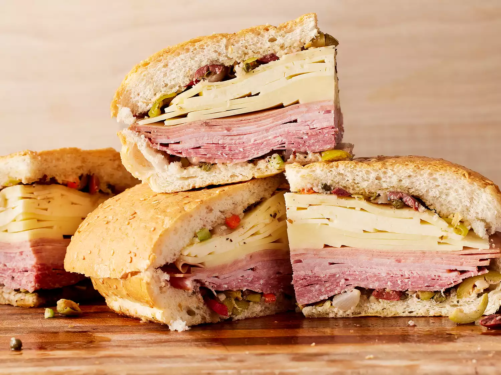

Real N'awlins Muffuletta

Description
Dive into the rich culinary heritage of New Orleans with our authentic Real N'awlins Muffuletta recipe. This iconic sandwich is a true taste of the Big Easy, featuring layers of savory Italian meats, cheeses, and a tangy olive salad, all piled high on a round sesame loaf. Originating from the bustling French Quarter, the Muffuletta is perfect for a hearty lunch, a picnic treat, or sharing at a festive gathering. Follow our step-by-step guide to create this flavorful, filling, and unforgettable sandwich that captures the vibrant spirit of New Orleans.
Ingredients
For the Olive Salad
- 1 cup green olives, pitted and chopped
- 1 cup black olives, pitted and chopped
- ½ cup roasted red peppers, chopped
- ½ cup giardiniera (Italian pickled vegetable mix), chopped
- ¼ cup capers, drained
- 4 cloves garlic, minced
- ½ cup extra virgin olive oil
- ¼ cup red wine vinegar
- 1 teaspoon dried oregano
- 1 teaspoon dried basil
- ½ teaspoon black pepper
- ½ teaspoon crushed red pepper flakes (optional)
For the Sandwich
- 1 large round sesame loaf (about 10 inches in diameter), or two smaller round loaves
- ¼ pound salami, thinly sliced
- ¼ pound mortadella, thinly sliced
- ¼ pound ham, thinly sliced
- ¼ pound provolone cheese, thinly sliced
- ¼ pound mozzarella cheese, thinly sliced
Steps
Prepare the olive Salad
- In a large bowl, combine the green olives, black olives, roasted red peppers, giardiniera, capers, and minced garlic.
- Add the olive oil, red wine vinegar, oregano, basil, black pepper, and crushed red pepper flakes (if using).
- Mix well to combine and let the olive salad marinate for at least 1 hour, preferably overnight, to develop the flavors.
Assemble the Muffuletta
- Slice the round sesame loaf horizontally in half.
- Spread a generous amount of the olive salad on the bottom half of the loaf, ensuring it covers the entire surface.
- Layer the salami, mortadella, ham, provolone cheese, and mozzarella cheese on top of the olive salad.
- Spread another layer of the olive salad on the top half of the loaf.
Finish the Sandwich
- Place the top half of the loaf over the layered meats and cheese.
- Press down gently to compact the sandwich.
Serve
- Traditionally, the Muffuletta is allowed to sit for about 30 minutes to let the flavors meld before serving.
- Cut the sandwich into quarters or eighths, depending on the size of the loaf and your preference.